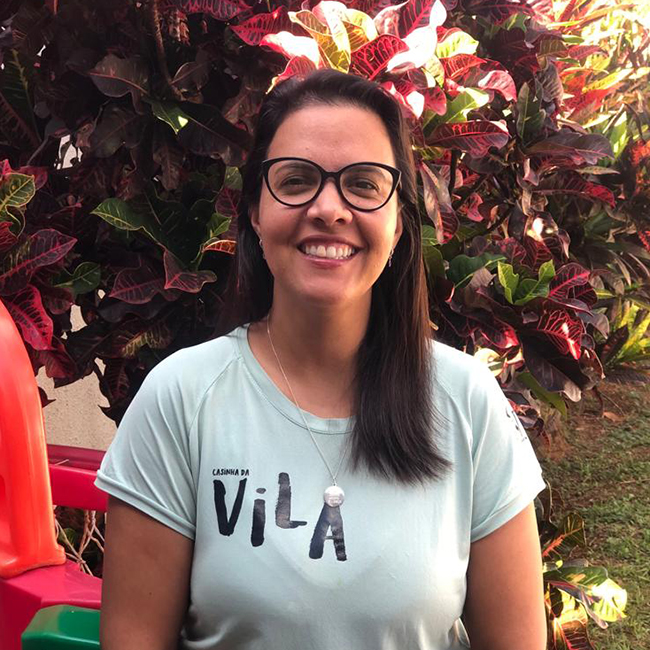

Olá, eu sou a Tia Sula!
Sou a fundadora do Espaço Recreativo educacional Casinha da Vila.
Desde os meus 15 anos trabalho com o cuidado de crianças. Apaixonada
por crianças, em 2016 embarquei na aventura de criar um lugar para
cuidados de crianças chamado Babá Disponível que funcionava
24 horas, sete dias por semana. Em 2021 optei por mudar de ares e
fundei a Casinha da Vila, um espaço recreativo educacional que tem
como objetivo ser uma extensão dos lares das crianças e uma rede de
apoio para as famílias. Buscando sempre respeitar e amar acima de
tudo.
Se tiver alguma dúvida, pode entrar em contato comigo pelo Whatsapp
da nossa casinha e ficarei feliz em atendê-los
Olá, eu sou o Tio Ítalo!
Sou o sócio-proprietário da Casinhada Vila. Além disso, sou Pedagogo
pela UFSCar, especialista em Metodologia Montessori, psico e
neuro-psicopedagogo. Sou ambientalista de primeira formação, o que
me leva a conhecer a fundo a educação ambiental e trazê-la para
dentro das vivências com nossas crianças. Busco trabalhar com as
potencialidades de cada criança, para que futuramente ao encontrar
seu lugar ao mundo, a principal forma de trabalhar tal abordagem é
com carinho, leveza e sempre respeitando os processos.
Sou a favor da educação para a libertação, onde o conhecimento não é
depositado nas crianças e sim um grande momento de troca para ambos.
Vou deixar aqui o link do meu
currículo lattes, para que você possa saber um pouco mais da minha trajetória
acadêmica. Qualquer dúvida, é só clicar no Whatsapp da nossa casinha
e estarei sempre disposto a auxiliar.
Olá, eu sou a Nala!
Sou a mascote e estagiária do espaço recreativo educacional Casinha
da Vila, cheguei aqui bem pequena e assustada! Mas com todo o amor
que recebi das crianças eu fiquei super confiante e gosto de correr
com eles pelo quintal! E vou contar um segredo ainda, eu AMO brincar
com eles!